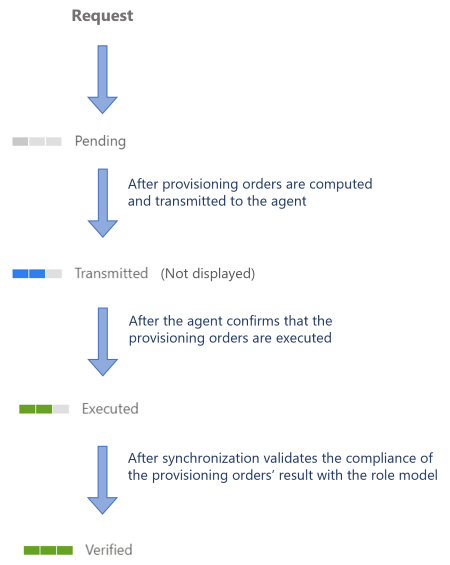

Provision Automatically
How to make Identity Manager automatically write to the managed systems.
Overview
In the lifecycle of a resource (entitlement assignment, resource creation, resource update, etc.), automated provisioning is used to minimize human intervention and trust Identity Manager with role model enforcement in external systems.
Provisioning states
In an assignment request's lifecycle, provisioning automation implies skipping the Transmitted state as Identity Manager no longer waits for a user to make changes anymore. For this reason, an assignment request goes through the following provisioning states:

Participants and Artifacts
At this point, integrators should have all the elements they need to operate.
| Input | Output |
|---|---|
|
Review Provisioning
(required) Automated provisioning Create a Connection (required) |
Updated managed systems |
Implement Automated Provisioning
automated provisioning is performed through a connection using a References: Packages for fulfilling external systems.
Perform Automated Provisioning
There is no procedure to perform automated provisioning, for it is automatic and thus handled by Identity Manager in daily jobs.
Make sure that the task used to compute and generate provisioning orders was launched after the request (or the provisioning review, if any), through the complete job in the Job Execution page.

Verify Automated Provisioning
In order to verify the process:
-
Select a test user in the directory, accessible from the home page.

-
Follow the Request Entitlement Assignment to make a change in one of their permissions, which involves automated provisioning.
-
Perform automated provisioning and check in Identity Manager that the change was effectively made.